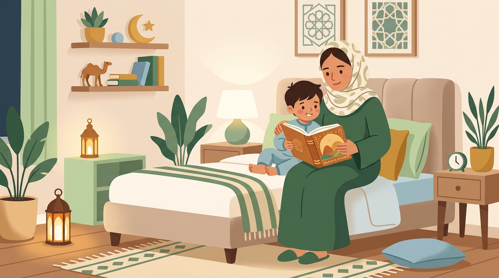

تنظيم نوم الطفل من الولادة حتى ٦ سنوات: دليل شامل حسب العمر

الساعة ١٠ بالليل. طفلك يركض في الصالة. "مو نعسان!" يقولها وعيونه حمر من التعب. تحاولين تقنعيه، يبكي. تستسلمين، يقعد مع الكبار لين ١٢. ينام أخيراً — وبكرة يصحى زعلان ومو طبيعي.
هل هذا مألوف؟ أنتِ مو لوحدك. هذا الدليل يغطّي تنظيم نوم الطفل من أول يوم حتى عمر ٦ سنوات — بطرق عملية تبدأين فيها من الليلة.
كم ساعة يحتاج طفلك ينام؟ (جدول حسب العمر)
قبل ما نتكلم عن الطرق، لازم نعرف: كم ساعة نوم يحتاجها طفلك فعلاً؟ حسب توصيات الأكاديمية الأمريكية لطب الأطفال (AAP):
ساعات النوم الموصى بها (شاملة القيلولة)
- حديثي الولادة (٠-٣ أشهر): ١٤-١٧ ساعة
- رضع (٤-١١ شهر): ١٢-١٥ ساعة
- أطفال صغار (١-٢ سنة): ١١-١٤ ساعة
- ما قبل المدرسة (٣-٥ سنوات): ١٠-١٣ ساعة
- سن المدرسة (٦+ سنوات): ٩-١٢ ساعة
علامات إن طفلك ما ياخذ كفايته من النوم: عصبية غير مبررة، صعوبة في التركيز، فرك العيون كثيراً أثناء النهار، نوبات غضب متكررة، مقاومة شديدة للاستيقاظ صباحاً. إذا تشوفين ٣ أو أكثر من هالعلامات — غالباً طفلك يحتاج ينام أكثر.
تنظيم نوم الرضيع (٠-٦ أشهر)
أول شي: حديثي الولادة ما عندهم جدول — وهذا طبيعي تماماً. أجسامهم الصغيرة ما تفرّق بين الليل والنهار بعد. لا تضغطين على نفسك بـ"جدول" في أول شهرين.
متى تبدأين الروتين: من عمر ٣-٤ أشهر تقريباً، يبدأ الطفل يميّز بين الليل والنهار. هنا تقدرين تبدأين تبنين روتين بسيط.
أساسيات النوم الآمن: على ظهره دائماً، فرشة صلبة، بدون وسائد أو بطانيات سائبة أو ألعاب في السرير. هذي مو اقتراحات — هذي ضروريات سلامة.
أدوات تساعدك: القماط (للأشهر الأولى)، الضوضاء البيضاء، غرفة مظلمة تماماً. هالثلاث أدوات بسيطة بس تفرق كثير.
الرضعات الليلية: في هالعمر، الرضعات الليلية طبيعية وضرورية. الهدف مو إلغاءها — الهدف إنها تصير هادية وسريعة. لا تفتحين الأنوار القوية، لا تلعبين معه، لا تغيّرين الحفّاظة إلا إذا لازم. أرضعيه في الظلام وارجعيه.
توقعات واقعية: "ينام طول الليل" في هالعمر يعني ٥-٦ ساعات متواصلة — مو ١٢ ساعة. إذا طفلك يعطيك ٥ ساعات متواصلة بعمر ٤ أشهر، هذا ممتاز.
تنظيم نوم الطفل من ٦-١٢ شهر
هذي المرحلة اللي يبدأ فيها "تدريب النوم" الحقيقي. طفلك صار يقدر يتعلّم ينام بشكل مستقل — إذا أعطيتيه الفرصة.
طرق التنويم (اختاري اللي تناسبك — كلها صحيحة):
١. روتين ثابت (الطريقة اللطيفة): نفس الخطوات كل ليلة: حمام ← بجامة ← رضعة ← أذكار ← نوم. بدون بكاء، بدون مقاومة. تحتاج صبر وثبات لكن نتائجها ممتازة على المدى الطويل.
٢. تقليل التدخّل تدريجياً (Fading): إذا طفلك معتاد تهزّينه أو ترضعينه لين ما يغفى — تقلّلين التدخّل شوي شوي. بدل الهز، تحطّينه نعسان بس صاحي. بدل الرضاعة، تربّتين. كل أسبوع تقلّلين خطوة.
٣. طريقة الكرسي (Chair Method): تحطّين طفلك في سريره صاحي وتقعدين على كرسي جنبه. كل ليلتين-ثلاث، تبعدّين الكرسي شوي عن السرير لين ما توصلين خارج الغرفة. الطفل يتعلّم ينام وهو يعرف إنك موجودة — بس بدون ما يحتاجك تمسكينه.
نكسة النوم (Sleep Regression) عند ٨-١٠ أشهر: فجأة طفلك اللي كان ينام تمام يرجع يصحى بالليل كثير. هذا طبيعي ١٠٠٪ — سببه تطوّرات دماغية (يتعلّم يحبي، يقف، كلمات جديدة). تستمر ١-٣ أسابيع وتروح لحالها. الأهم: لا تغيّرين الروتين كله عشان أسبوعين. استمري على نفس النظام وبتعدّي.
نوم الطفل من سنة لسنتين
الانتقال من السرير الصغير للكبير: لا تستعجلين. معظم الأطفال ما يحتاجون ينتقلون قبل عمر ٢-٣ سنوات. إذا طفلك ما يحاول يتسلّق ويطلع — خلّيه في سريره. الانتقال المبكّر غالباً يسبب مشاكل نوم جديدة.
مرحلة "أبي ماما": قلق الانفصال يوصل ذروته في هالعمر. طفلك يبكي لما تطلعين من الغرفة — مو عشان يتلاعب فيك، عشان فعلاً يخاف. الحل: روتين وداع ثابت وقصير. "تصبحين على خير يا حبيبتي، ماما بالغرفة الثانية، وبرجع أشيكي عليك." وارجعي فعلاً بعد ٥ دقائق أول كم مرة — لين ما يثق إنك ترجعين.
القيلولة: في هالعمر ينتقل من قيلولتين ليوحدة. العلامات إنه جاهز: يقاوم القيلولة الصباحية، يبقى صاحي بدون عصبية لين الظهر. حوّلي لقيلولة وحدة بعد الغداء (١٢:٣٠-٢:٣٠ تقريباً).
الشاشات قبل النوم: دراسة من جامعة كولورادو بولدر أثبتت إن تعرّض الأطفال الصغار للشاشات قبل النوم يقلل إفراز هرمون الميلاتونين بنسبة 88٪ — وهذا هرمون النوم الأساسي. القاعدة: لا شاشات قبل النوم بساعة. ونعم، هذا يشمل "كرتون هادي".
نوم الطفل من سنتين لأربع سنوات (المرحلة المنسية)
هذي المرحلة اللي ما يتكلّم عنها أحد في المحتوى العربي — وهي الأصعب على كثير من الأمهات.
طفلك عمره ٣ سنوات. ما ينام إلا الساعة ١٢. يقول "مو نعسان". يبي قصة ثانية، ومويه ثانية، ويبي يروح الحمام مرة ثالثة. صوت مألوف؟
"مو نعسان" = متعب جداً. أغلب الأطفال اللي يقولون "مو نعسان" هم في حالة overtired — أجسامهم أفرزت كورتيزول (هرمون التوتر) عشان يعوّض التعب، فيبانون نشيطين. بس هذا نشاط كاذب.
إلغاء القيلولة: بعض الأطفال يوقفون القيلولة بين ٢.٥-٤ سنوات. العلامات: يقاوم القيلولة كل يوم، لما ينام قيلولة ما ينام بالليل. الحل الانتقالي: بدل القيلولة، "وقت هدوء" ساعة — يقعد في غرفته مع كتب أو ألعاب هادية. مو نوم، بس راحة.
لعبة "قصة ثانية": كلنا نعرفها. الحل: اتفقي مسبقاً: "اليوم بنقرأ قصتين وبعدها ننام." لما يطلب الثالثة: "اتفقنا على قصتين، وسمعناهم. بكرة نقرأ قصص ثانية إن شاء الله." حازمة ولطيفة. هالحدود تعطيه أمان، مو حرمان.
الخوف من الظلام والأشباح: طبيعي جداً في هالعمر — خياله صار قوي بس ما يقدر يفرّق الخيال من الواقع. الحل: لا تقولين "ما فيه شي" (يحس إنك ما تفهمينه). بدل كذا: "أنا أفهم إنك خايف. تعال نتشيك مع بعض." افتحي الدولاب، شوفي تحت السرير، وبعدها: "شفتِ؟ ما فيه شي. وأنا في الغرفة الثانية إذا احتجتيني." ممكن تخلّين لمبة خافتة مفتوحة.
السهرات العائلية — التحدي الأكبر: في الثقافة السعودية، الزيارات العائلية غالباً تكون بعد العشاء — ١٠ بالليل وبعد. وطفلك يقعد "عشان الضيوف" أو "عشان ما يزعّل جدته". هذا أكبر عدو لنوم الأطفال عندنا.
الحل مو إنك تقاطعين العائلة — الحل إنك تحطّين حدود بوضوح ولطف: "نجي نزوركم بس الأطفال بينامون الساعة ٩، فبنرجع قبلها." أو إذا الزيارة عندكم: جهّزي غرفة الطفل مسبقاً ونوّميه في موعده حتى لو الضيوف موجودين. في البداية بيكون محرج — بس طفلك وصحته أولى.
نوم الطفل من ٤-٦ سنوات
نوم وقت المدرسة: إذا طفلك يصحى الساعة ٦:٣٠ للمدرسة ويحتاج ١٠-١١ ساعة نوم — يعني لازم ينام الساعة ٧:٣٠-٨:٣٠ بالليل. احسبيها من وقت الصحيان بالعكس.
الغرف المشتركة: كثير من البيوت السعودية فيها أطفال يتشاركون الغرفة — وهذا يخلق تحدي لما أعمارهم مختلفة. الحل: الكبير ينام بعد الصغير بنصف ساعة. خلال هالنصف ساعة، الكبير يقرأ في السرير بهدوء (لمبة قراءة خافتة). هذا يعطيه وقت خاص ويحترم نوم أخوه.
الاستقلالية في النوم: في هالعمر، المفروض طفلك يقدر ينام بمفرده بدون ما تقعدين جنبه. إذا لسه ما وصل لهالمرحلة، استخدمي طريقة الكرسي المذكورة فوق — بس بطريقة مناسبة لعمره: "ماما بتقعد عند الباب اليوم. وبكرة بتقعد في الممر. وبعدها بتكون في غرفتها — بس دايم هنا إذا احتجتني."
متى تقلقين: إذا طفلك يشخر بصوت عالي كل ليلة، أو يوقف تنفسه لثواني وهو نايم، أو عنده تعب شديد بالنهار رغم نوم كافي — راجعي طبيب الأطفال. هذي ممكن تكون علامات انقطاع التنفس أثناء النوم (وسببه غالباً اللوز أو اللحمية).
روتين النوم المثالي (خطوة بخطوة)
الروتين أهم من الطريقة. أي طريقة تنويم تختارينها بتنجح أكثر إذا كان قبلها روتين ثابت يعطي جسم طفلك إشارة: "وقت النوم قرب."
روتين ٣٠ دقيقة قبل النوم
- الدقيقة ٠: إيقاف الشاشات والألعاب الحركية
- الدقيقة ٥: حمام دافي (مو ضروري كل يوم — ممكن غسل وجه وأسنان)
- الدقيقة ١٥: لبس البجامة
- الدقيقة ٢٠: قصة أو قراءة هادية
- الدقيقة ٢٥: أذكار النوم مع بعض
- الدقيقة ٣٠: قبلة، دعاء، أنوار مطفية
أذكار النوم مع الأطفال: "باسمك اللهم أموت وأحيا" — هالذكر البسيط يصير طقس جميل بينك وبين طفلك. اقرأي المعوّذات وانفثي على يديك وامسحي جسم طفلك — مثل ما كان النبي ﷺ يفعل. هالروتين الروحاني يعطي الطفل أمان عميق ويربطه بالله من صغره.
الثبات أهم من الكمال. الروتين مو لازم يكون مثالي كل ليلة. المهم إن الخطوات الأساسية موجودة: تهدئة ← أذكار ← نوم. في أيام السفر أو الزيارات، سوّي نسخة مختصرة — أذكار وقبلة ونوم — أفضل بكثير من لا شي.
نوم الطفل في رمضان — كيف تحافظين على الروتين؟
رمضان يقلب كل شي — التراويح، السحور، السهرات. والسؤال: هل أتمسك بالروتين ولا أخلّيه يعيش أجواء رمضان؟
الجواب: شوي من هذا وشوي من هذا. مرونة محسوبة — تأخير بسيط في الموعد مع المحافظة على نفس الخطوات.
لدليل تفصيلي عن نوم الأطفال في رمضان حسب العمر — مع جداول جاهزة ونصائح للتراويح والسحور — اقرأي مقالنا: نوم الطفل في رمضان: دليل عملي حسب عمر طفلك.
أكبر ٥ أخطاء في تنظيم نوم الأطفال
١. ترك الطفل يسهر مع الكبار: "يحب يقعد معنا" — نعم يحب، بس جسمه يحتاج ينام. الكبار يقدرون يسهرون ويعوّضون — الأطفال لا. السهر المتكرر يأثر على النمو والمناعة والتركيز.
٢. استخدام الشاشة كأداة تنويم: "أخليه يتفرج لين ما يغفى" — الشاشة تعمل العكس تماماً. الضوء الأزرق يمنع إفراز الميلاتونين، والمحتوى ينشّط دماغه بدل ما يهدّيه. النتيجة: ينام متأخر ونومه أخف.
٣. تغيير الروتين كل يوم: يوم ينام الساعة ٨، ويوم ١٠، ويوم ١١. الجسم يحتاج ثبات عشان الساعة البيولوجية تنضبط. اختاري موعد والتزمي فيه — حتى في عطلة نهاية الأسبوع (مرونة نصف ساعة مقبولة).
٤. إلغاء القيلولة عشان "ينام بدري بالليل": خرافة. الطفل المتعب ما ينام أسهل — يدخل في حالة إثارة مفرطة ويقاوم النوم أكثر. القيلولة تساعد النوم الليلي، ما تعرقله.
٥. مقارنة طفلك بأطفال ثانيين: "ابن خالتك ينام الساعة ٧!" — كل طفل مختلف. بعض الأطفال يحتاجون نوم أقل طبيعياً. ركّزي على علامات الراحة عند طفلك (مزاج جيد، طاقة كافية، تركيز طبيعي) بدل مقارنته بأرقام أو أطفال ثانيين.
النوم مهارة — وطفلك يقدر يتعلّمها
تنظيم نوم الطفل مو حظ أو جينات — هو مهارة تتعلّم مثل أي مهارة ثانية. تحتاج صبر، ثبات، وشوية إيمان إن الأمور بتتحسّن.
خلاصة عملية — ابدأي من الليلة
- حددي عدد ساعات النوم اللي يحتاجها طفلك حسب عمره
- احسبي موعد النوم من وقت الصحيان بالعكس
- ابني روتين ثابت: تهدئة ← أذكار ← نوم
- أوقفي الشاشات قبل النوم بساعة
- اختاري طريقة تنويم تناسب أسلوبك وطفلك — والتزمي فيها أسبوعين قبل ما تحكمين
- الثبات أهم من الكمال — أسبوع ثابت أفضل من شهر متذبذب
وتذكّري: مو لازم يكون مثالي من أول ليلة. التحسّن التدريجي هو الهدف. كل ليلة ثابتة تبنين فيها عادة بتبقى مع طفلك سنوات. أنتِ تسوّين شغل عظيم.